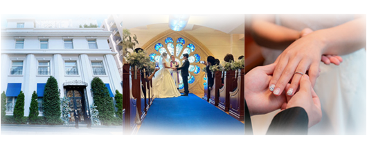

TOP
pre photo shoot
Wedding menu
movie
TokyoAfrodite

Access…
Map to Aphrodite
住所
〒103-0006
東京都中央区日本橋富沢町12-13
営業時間
12:00-19:00
（定休日：月曜日・火曜日）
アクセス
都営浅草線 東日本橋駅 A3番出口 徒歩2分
日比谷線 小伝馬町駅 3番出口 徒歩5分
URL
https://www.bestbridal.co.jp/
tokyo/afrodite_nihonbashi/
Map